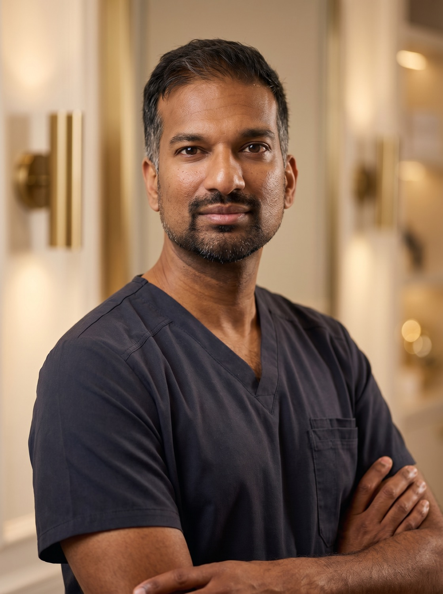
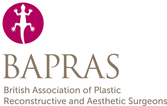
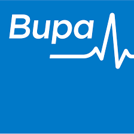

Body
- Abdominoplasty
- Arm Lift
- Thigh Lift
- Liposuction
- Post-Weight-Loss Lift
- Mummy Makeover
Mr Roshan Vijayan specialises in natural, beautifully balanced body contouring and aesthetic surgery, restoring confidence with safe, tried-and-tested technique, expertly executed.

“I believe in surgery as a partnership, a shared journey, with honesty about what is involved and a result that looks entirely, naturally you.”
For Mr Vijayan, plastic surgery sits where artistry meets medicine. An artistic eye, meticulous attention to detail and a holistic, unhurried approach shape every plan he creates. He is, first and foremost, a doctor, frank about what is safe, advisable and truly in your best interests.
His particular interest is body restoration after pregnancy and weight loss: refining loose, redundant skin to reveal the physique beneath, and restoring the confidence to live fully again.
More about Mr Vijayan →Real outcomes from real patients, natural, balanced and beautifully healed. Drag the handle on each case to reveal the journey, before and after.

 Before
After
Before
After

 Before
After
Before
After
Body contouring cases are being prepared for publication. See the full gallery →
Whether you are restoring your body after weight loss or pregnancy, refining your shape, or seeking expert facial, eyelid and skin-cancer reconstruction, every plan is studied and drawn up individually, with Mr Vijayan’s artistry, honesty and consultant-led care at its heart.
View all services →



Mr Vijayan personally reviews you, answers your emails within a day, and calls on day one after surgery, never handed to others.
Each plan is studied and drawn up individually, with a thorough written summary after your consultation.
Consultations often within a week or two, with flexible scheduling for surgery.
For more complex procedures, Mr Vijayan operates alongside a second consultant surgeon, for greater precision, less time under anaesthetic and an added layer of safety.
Qualified in London in 2008 with a first-class intercalated degree in Endocrinology, Mr Vijayan trained across more than twenty teaching hospitals, among them the Queen Victoria, Royal London, Royal Free, Chelsea & Westminster and Guy’s & St Thomas’. Now in his fifth year as an NHS consultant, he has published widely, presented internationally, and visited leading units in South Korea and Taiwan.
A creative person at heart, he is drawn to the artistry of plastic surgery: studying a problem holistically, taking time, and crafting a result that is natural and proportioned.
GMC Reg. No. 7020524

Registered & accredited

Recognised by leading insurers

A simple message or call to begin the conversation.
20–30 unhurried minutes to listen, assess and explore your goals.
A thorough letter summarising the approach, recovery and risks.
Included as standard, to recap, answer questions and confirm.
Performed by Mr Vijayan with a senior surgical assistant.
A day-one call and unlimited, consultant-led follow-up.

3 Hatfield Avenue, Hatfield, AL10 9UA
One Medical House, Boundary Way, Hemel Hempstead, HP2 7YU
152 London Road, St Albans, AL1 1PQ
Coreys Mill Lane, Stevenage, SG1 4AB · NHS
Tell Mr Vijayan a little about what you’d like to achieve. Enquiries are answered personally, usually within a day.